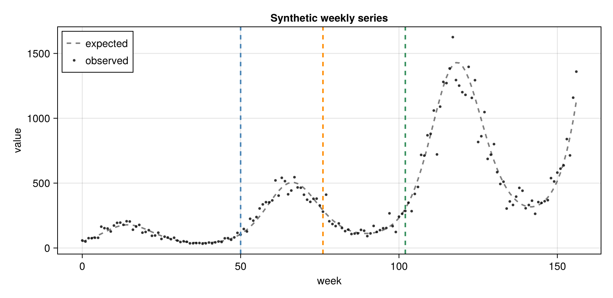
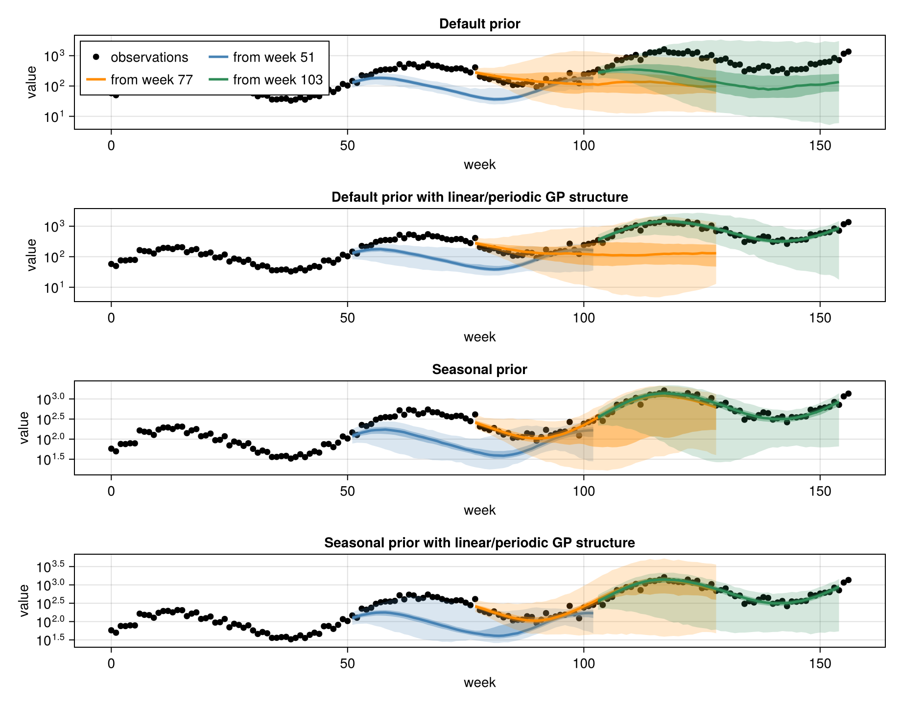
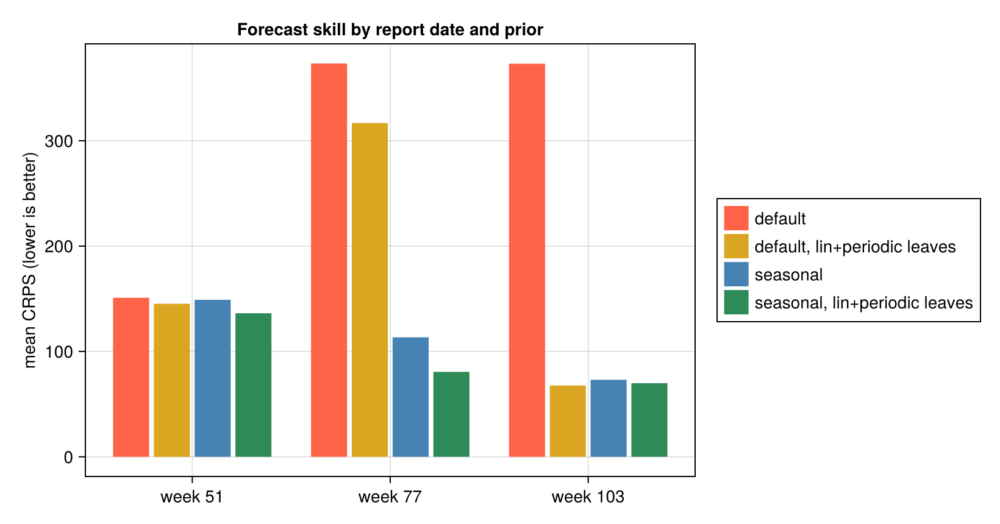

using MarkdownSetting GP priors with Accessors.jl
Customising the AutoGP prior for epidemiological seasonality
CDC Center for Forecasting and Outbreak Analytics (CFA/CDC)
make_and_fit_model accepts a configuration object of type AutoGP.GP.GPConfig using the config keyword. The configuration object describes priors over the Gaussian Process's kernel structure and hyperparameters. In this vignette we show how to edit the default GPConfig() to give a strong prior when we expect a certain seasonal cycle, and how that improves forecasts.
In this vignette we are interested in two different priors. First, the underlying AutoGP kernel structure can be represented as a tree with primitive kernels at the leaves, and the internal nodes describing the combinations Plus, Times and ChangePoint, c.f. AutoGP.jl documentation. We can use the configuration to set the prior probability for each of the primitive kernels to be a leaf in the structure. Second, we can set three hyperparameter priors for the gamma lengthscale exponent for GammaExponential primitive, period period for Periodic primitive and wildcard for all other hyperparameters.
We will show how to edit the period prior, and likelihood of Periodic primitive kernels in the tree kernel structure, to give a a strong seasonal prior, and how that improves forecasts. We score forecasts following the scoring approach of the Getting started vignette.
GPConfig is an immutable struct which makes "change just this one field" awkward to write by hand. Accessors.jl's @set macro does exactly that: it returns a copy with the chosen field(s) changed and all the others preserved.
Accessors.jlis a convenience used here in the docs; it is not a dependency ofNowcastAutoGPitself. The same edits can be made by constructing aGPConfigdirectly.
Loading dependencies
import NowcastAutoGP.AutoGP as AGP
using NowcastAutoGP
using Accessors
using CairoMakie
using Dates, Distributions, Random
Random.seed!(1234)
CairoMakie.activate!(type = "png")Precompiling packages...
1501.6 ms ✓ StatsBase
684.1 ms ✓ PDMats → StatsBaseExt
1898.5 ms ✓ BoxCox
2650.7 ms ✓ Distributions
987.2 ms ✓ Distributions → DistributionsTestExt
1376.8 ms ✓ Distributions → DistributionsChainRulesCoreExt
10716.0 ms ✓ AutoGP
3231.0 ms ✓ NowcastAutoGP
8 dependencies successfully precompiled in 19 seconds. 134 already precompiled.
Precompiling packages...
827.8 ms ✓ StructArrays
875.8 ms ✓ KernelDensity
688.1 ms ✓ StructArrays → StructArraysAdaptExt
814.3 ms ✓ StructArrays → StructArraysSparseArraysExt
796.5 ms ✓ StructArrays → StructArraysStaticArraysExt
252.2 ms ✓ StructArrays → StructArraysLinearAlgebraExt
2742.5 ms ✓ MathTeXEngine
11083.1 ms ✓ TiffImages
72556.2 ms ✓ Makie
25854.3 ms ✓ CairoMakie
10 dependencies successfully precompiled in 110 seconds. 259 already precompiled.
Precompiling packages...
599.0 ms ✓ Accessors → StructArraysExt
1 dependency successfully precompiled in 1 seconds. 20 already precompiled.
Precompiling packages...
9142.4 ms ✓ BoxCox → BoxCoxMakieExt
1 dependency successfully precompiled in 10 seconds. 266 already precompiled.
Inspecting the default priors
GPConfig() exposes the prior as plain fields. The leaf-kernel distribution is a probability vector over the primitive kernels, indexed Constant=1, Linear=2, SquaredExponential=3, GammaExponential=4, Periodic=5:
default_config = GPConfig()
default_config.node_dist_leaf5-element Vector{Float64}:
0.0
0.3333333333333333
0.0
0.3333333333333333
0.3333333333333333So by default, the SquaredExponential primitive (index 3) has zero prior mass, and is treated as superceded by the GammaExponential (index 4), which recovers it as a special case when the gamma lengthscale exponent is exactly 2. The Linear (index 2) and Periodic (index 5) primitives have equal prior mass with the GammaExponential (index 4), and the Constant (index 1) has zero mass. Therefore, the default prior is agnostic between Linear, GammaExponential and Periodic primitives.
The hyperparameter priors live in a nested Dict; the period prior is a LogNormal(μ, σ) over the periodic component's period:
default_config.prior[:period]Dict{Symbol, Float64} with 2 entries:
:mu => -1.5
:sigma => 1.0AutoGP rescales the input time axis to [0, 1] internally, so this period is in normalised units as a fraction of the training window. The default median period is therefore only about a fifth of the window:
exp(default_config.prior[:period][:mu]) # ≈ 0.22 of the window0.22313016014842982Example: A seasonal series and a few report dates
In this example, we imagine having a new data stream for a pathogen, which a priori we know has a strong annual cycle. We will make year long forecasts from three different report dates as data accrue: at one, one-and-a-half and two years of history. We will show how to build a strong seasonal prior into the model in two ways:
- Re-centring the period prior on an annual cycle for that window.
- Restricting the leaf-kernel distribution to only allow Linear + Periodic kernels.
To demonstate, we simulate three years of synthetic weekly observations using a simple log-linear model with annual sinusoidal variation around a linear trend with multiplicative noise.
start_date = Date(2022, 1, 1)
all_dates = collect(start_date:Week(1):(start_date + Week(52 * 3)))
n_all = length(all_dates)
tt = 0:(n_all - 1)
log_truth = log(50.0) .+ 1.0 .* sin.(2π .* tt ./ 52) .+ 0.02 .* tt
truth = exp.(log_truth)
observations = exp.(log_truth .+ 0.15 .* randn(n_all))
# The report dates are at weeks 51, 77 and 103 (1 year, 1.5 years and 2 years in).
report_weeks = 51 .+ [0, 26, 52]
horizon = 52 # forecast one year ahead
report_colours = [:steelblue, :darkorange, :seagreen]
fig_data = let
fig = Figure(size = (820, 400))
ax = Axis(
fig[1, 1];
xlabel = "week",
ylabel = "value",
title = "Synthetic weekly series",
)
tvals = Dates.value.(all_dates .- first(all_dates)) / 7
lines!(
ax, tvals, truth;
color = (:black, 0.5), label = "expected",
linestyle = :dash, linewidth = 2
)
scatter!(
ax, tvals, observations;
color = (:black, 0.8), markersize = 5, label = "observed"
)
vlines!(
ax, Dates.value.(all_dates[report_weeks] .- first(all_dates)) ./ 7;
color = report_colours, linestyle = :dash, linewidth = 2
)
axislegend(ax; position = :lt)
fig
end
Choosing priors
Re-centring the period prior with @set
AutoGP works in normalised time: it rescales the training window to [0, 1], so a Periodic kernel's period is expressed as a fraction of the window, and prior[:period] is a LogNormal(μ, σ) over that fraction. We can re-centre the prior using@set to give a new μ — here, held tightly with a small σ. For example, for a three year window of data an annual cycle is 1/3 of the window, so μ = log(1/3):
seasonal_example = @set GPConfig().prior[:period][:mu] = -log(3.0)
seasonal_example = @set seasonal_example.prior[:period][:sigma] = 0.1
seasonal_example.prior[:period]Dict{Symbol, Float64} with 2 entries:
:mu => -1.09861
:sigma => 0.1@set returns a fresh GPConfig; every other prior, and other fields, are carried over unchanged. @set only touched prior[:period]:
seasonal_example.prior[:gamma] == GPConfig().prior[:gamma]trueAlterating the leaf-kernel distribution
The leaf-kernel distribution is a simple probability vector over the primitive kernels. We can use @set to change it, for example to specialise on only Linear + Periodic kernels (indices 2 and 5):
config_lin_period = @set GPConfig().node_dist_leaf = [0.0, 0.5, 0.0, 0.0, 0.5]AutoGP.GP.GPConfig
Constant: Int64 1
Linear: Int64 2
SquaredExponential: Int64 3
GammaExponential: Int64 4
Periodic: Int64 5
Plus: Int64 6
Times: Int64 7
ChangePoint: Int64 8
index_to_node: Dict{Integer, Type{<:AutoGP.GP.Node}}
node_dist_leaf: Array{Float64}((5,)) [0.0, 0.5, 0.0, 0.0, 0.5]
node_dist_nocp: Array{Float64}((7,)) [0.0, 0.21428571428571427, 0.0, 0.21428571428571427, 0.21428571428571427, 0.17857142857142858, 0.17857142857142858]
node_dist_cp: Array{Float64}((8,)) [0.0, 0.21428571428571427, 0.0, 0.21428571428571427, 0.21428571428571427, 0.14285714285714285, 0.14285714285714285, 0.07142857142857142]
max_branch: Int64 2
max_depth: Int64 -1
changepoints: Bool true
noise: Nothing nothing
prior: Dict{Any, Any}
Forecasting from each report date
At each report date we fit four models on the data so far that only differ in their priors:
- Default prior (the default
GPConfig()) - Default hyperpriors, but only
Linear+Periodicprimitive leaf-kernels allowed, prior on other kernels set to zero. - Seasonal hyperprior, fairly tight around an annual cycle, but the default primitive leaf-kernel distribution.
- Seasonal hyperprior, and only
Linear+Periodicprimitive leaf-kernels allowed, prior on other kernels set to zero.
Everything except config is identical; the n_mcmc/n_hmc controls pass straight through to AutoGP.fit_smc!. We also set adaptive_rejuvenation = true to use the classic SMC resample-then-move adaptive rejuvenation scheme; that is we make MCMC moves only when the effective sample size (ESS) of the particle ensemble drops below the default threshold of 50% of the particle number. Each fitted model is a particle ensemble over GP tree-kernels, so each forecast is a full predictive distribution.
n_particles = 32
fit_params = (
smc_data_proportion = 0.005,
n_mcmc = 200,
n_hmc = 50,
adaptive_rejuvenation = true,
)
n_draws = 2000
results = map(report_weeks) do w
horizon_dates = all_dates[(w + 1):(w + horizon)]
horizon_truth = observations[(w + 1):(w + horizon)]
transformation, inv_transformation = get_transformations("positive", observations[1:w])
train_data = create_transformed_data(
all_dates[1:w], observations[1:w]; transformation
)
# a seasonal prior for *this* window: an annual cycle is 365 days and the window spans
# `window_length` days, so in normalised units the period is 365/window_length → μ = log(365/window_length)
window_length = Dates.value(all_dates[w] - all_dates[1])
seasonal_config = @set GPConfig().prior[:period][:mu] = log(365 / window_length)
seasonal_config = @set seasonal_config.prior[:period][:sigma] = 0.3
seasonal_config_lin_period_prior = @set seasonal_config.node_dist_leaf = [0.0, 0.5, 0.0, 0.0, 0.5]
default_config_lin_period_prior = @set GPConfig().node_dist_leaf = [0.0, 0.5, 0.0, 0.0, 0.5]
default_model = make_and_fit_model(
train_data;
n_particles, config = GPConfig(), fit_params...
)
seasonal_model = make_and_fit_model(
train_data;
n_particles, config = seasonal_config, fit_params...
)
seasonal_config_lin_period_model = make_and_fit_model(
train_data;
n_particles, config = seasonal_config_lin_period_prior, fit_params...
)
default_config_lin_period_model = make_and_fit_model(
train_data;
n_particles, config = default_config_lin_period_prior, fit_params...
)
return (;
report_week = w,
horizon_dates,
horizon_truth,
default = forecast(
default_model, horizon_dates, n_draws;
inv_transformation
),
seasonal = forecast(
seasonal_model, horizon_dates, n_draws;
inv_transformation
),
seasonal_config_lin_period = forecast(
seasonal_config_lin_period_model, horizon_dates, n_draws;
inv_transformation
),
default_config_lin_period = forecast(
default_config_lin_period_model, horizon_dates, n_draws;
inv_transformation
),
default_model = default_model,
seasonal_model = seasonal_model,
seasonal_config_lin_period_model = seasonal_config_lin_period_model,
default_config_lin_period_model = default_config_lin_period_model,
)
end[ Info: Using positive transformation with offset = 0.0
┌ Warning: Using more particles than available threads.
└ @ AutoGP ~/.julia/packages/AutoGP/SVRPE/src/api.jl:226
┌ Warning: Using more particles than available threads.
└ @ AutoGP ~/.julia/packages/AutoGP/SVRPE/src/api.jl:226
┌ Warning: Using more particles than available threads.
└ @ AutoGP ~/.julia/packages/AutoGP/SVRPE/src/api.jl:226
┌ Warning: Using more particles than available threads.
└ @ AutoGP ~/.julia/packages/AutoGP/SVRPE/src/api.jl:226
[ Info: Using positive transformation with offset = 0.0
┌ Warning: Using more particles than available threads.
└ @ AutoGP ~/.julia/packages/AutoGP/SVRPE/src/api.jl:226
┌ Warning: Using more particles than available threads.
└ @ AutoGP ~/.julia/packages/AutoGP/SVRPE/src/api.jl:226
┌ Warning: Using more particles than available threads.
└ @ AutoGP ~/.julia/packages/AutoGP/SVRPE/src/api.jl:226
┌ Warning: Using more particles than available threads.
└ @ AutoGP ~/.julia/packages/AutoGP/SVRPE/src/api.jl:226
[ Info: Using positive transformation with offset = 0.0
┌ Warning: Using more particles than available threads.
└ @ AutoGP ~/.julia/packages/AutoGP/SVRPE/src/api.jl:226
┌ Warning: Using more particles than available threads.
└ @ AutoGP ~/.julia/packages/AutoGP/SVRPE/src/api.jl:226
┌ Warning: Using more particles than available threads.
└ @ AutoGP ~/.julia/packages/AutoGP/SVRPE/src/api.jl:226
┌ Warning: Using more particles than available threads.
└ @ AutoGP ~/.julia/packages/AutoGP/SVRPE/src/api.jl:226
We forecast a year ahead from each report date under all four priors (one row each).
fig_forecasts = let
fig = Figure(size = (920, 720))
panels = (
(key = :default, row = 1, title = "Default prior"),
(key = :default_config_lin_period, row = 2, title = "Default prior with linear/periodic GP structure"),
(key = :seasonal, row = 3, title = "Seasonal prior"),
(key = :seasonal_config_lin_period, row = 4, title = "Seasonal prior with linear/periodic GP structure"),
)
tvals = Dates.value.(all_dates .- first(all_dates)) / 7
for panel in panels
ax = Axis(
fig[panel.row, 1];
xlabel = "week", ylabel = "value", title = panel.title,
yscale = log10,
)
scatter!(
ax, tvals, observations;
color = :black, label = "observations"
)
for (res, colour) in zip(results, report_colours)
fc = getproperty(res, panel.key)
fx = Dates.value.(res.horizon_dates .- first(all_dates)) / 7 # convert to weeks for x-axis
lower_025 = [quantile(row, 0.025) for row in eachrow(fc)]
lower_25 = [quantile(row, 0.25) for row in eachrow(fc)]
med = [quantile(row, 0.5) for row in eachrow(fc)]
upper_75 = [quantile(row, 0.75) for row in eachrow(fc)]
upper_975 = [quantile(row, 0.975) for row in eachrow(fc)]
band!(ax, fx, lower_025, upper_975; color = (colour, 0.2))
band!(ax, fx, lower_25, upper_75; color = (colour, 0.4))
lines!(ax, fx, med; color = colour, linewidth = 2.5, label = "from week $(res.report_week)")
end
panel.row == 1 && axislegend(ax; position = :lt, nbanks = 2)
end
fig
end
We see that incorporating our prior knowledge of seasonality substantially improves forecasts. However, this improvement is not uniform; at the first report date, when only one year of data is available, there is insufficient information to learn the secular trend underneath the seasonal variation. By one and a half years, the change in compared to the previous season is clearer, and the strong seasonal prior allows the model to extrapolate that pattern forward. This is especially pronounced when we restrict the leaf-kernel distribution to only allow Linear + Periodic primitives. Later on, the model has locked onto a combination of kernels that captures the trend and seasonality, so the restriction to Linear + Periodic leaves makes less difference.
Scoring with CRPS
We score each forecast against out-of-sample observations using the Continuous Ranked Probability Score (CRPS) a proper scoring rule from the Getting started vignette (lower is better), reusing the same hand-rolled estimator:
\[\text{CRPS}(X, y) = \mathbb{E}[|X - y|] - \frac{1}{2}\mathbb{E}[|X_1 - X_2|]\]
# Hand-rolled CRPS estimator (reproduced from the Getting started vignette).
function crps(y::Real, X::Vector{<:Real})
n = length(X)
# First term: E|X - y|
term1 = mean(abs.(X .- y))
# Second term: E|X_1 - X_2| over all ordered pairs
ordered_pairwise_diffs = [abs(X[i] - X[j]) for i in 1:n for j in (i + 1):n]
term2 = mean(ordered_pairwise_diffs)
# CRPS = E|X - y| - 0.5 * E|X_1 - X_2|
return term1 - 0.5 * term2
end
# mean CRPS over a forecast horizon for a (dates × draws) forecast matrix
mean_crps(truth, fc) = mean(crps(y, collect(X)) for (y, X) in zip(truth, eachrow(fc)))
crps_by_date = map(results) do res
(;
report_week = res.report_week,
default = mean_crps(res.horizon_truth, res.default),
default_lin_period = mean_crps(res.horizon_truth, res.default_config_lin_period),
seasonal = mean_crps(res.horizon_truth, res.seasonal),
seasonal_lin_period = mean_crps(res.horizon_truth, res.seasonal_config_lin_period),
)
end3-element Vector{@NamedTuple{report_week::Int64, default::Float64, default_lin_period::Float64, seasonal::Float64, seasonal_lin_period::Float64}}:
(report_week = 51, default = 150.96006350854293, default_lin_period = 145.27157670070207, seasonal = 148.997823973993, seasonal_lin_period = 136.28855586242133)
(report_week = 77, default = 373.30063983623944, default_lin_period = 316.81415453481105, seasonal = 113.39882438274986, seasonal_lin_period = 80.6348313345601)
(report_week = 103, default = 373.15777527071725, default_lin_period = 67.68526919040802, seasonal = 73.13602965490337, seasonal_lin_period = 69.887260753688)Scoring confirms the visual impression. The strong seasonal prior gives a markedly lower CRPS, after there is available contrast between the seasons to allow the secular trend to be learned.
fig_scores = let
# one dodged bar per approach, grouped by report date
approaches = [
(key = :default, label = "default", colour = :tomato),
(key = :default_lin_period, label = "default, lin+periodic leaves", colour = :goldenrod),
(key = :seasonal, label = "seasonal", colour = :steelblue),
(key = :seasonal_lin_period, label = "seasonal, lin+periodic leaves", colour = :seagreen),
]
n = length(crps_by_date)
xs = Int[]
heights = Float64[]
dodge = Int[]
colours = Symbol[]
for (j, approach) in enumerate(approaches), (i, row) in enumerate(crps_by_date)
push!(xs, i)
push!(heights, getproperty(row, approach.key))
push!(dodge, j)
push!(colours, approach.colour)
end
fig = Figure(size = (820, 430))
ax = Axis(
fig[1, 1];
xticks = (1:n, ["week $(row.report_week)" for row in crps_by_date]),
ylabel = "mean CRPS (lower is better)",
title = "Forecast skill by report date and prior"
)
barplot!(ax, xs, heights; dodge = dodge, color = colours)
Legend(
fig[1, 2],
[PolyElement(color = a.colour) for a in approaches],
[a.label for a in approaches]
)
fig
end
Averaged over the report dates the strong seasonal prior is the clear winner; the leaf-kernel restriction barely changes the score, with or without it:
overall_crps = (;
default = mean(row.default for row in crps_by_date),
default_lin_period = mean(row.default_lin_period for row in crps_by_date),
seasonal = mean(row.seasonal for row in crps_by_date),
seasonal_lin_period = mean(row.seasonal_lin_period for row in crps_by_date),
)(default = 299.13949287183317, default_lin_period = 176.59033347530703, seasonal = 111.84422600388207, seasonal_lin_period = 95.60354931688981)Summary
make_and_fit_model(...; config = ...)forwards anyAutoGP.GP.GPConfigto the model, so the full AutoGP prior is available without re-declaring it inNowcastAutoGP.Accessors.@setis a clean way to change one prior entry while preserving the rest, including deep edits into the nestedpriorDict.- Re-centring the period hyperparameter prior (
prior[:period]) on the seasonality you expect can substantially improve forecasts — here the strong seasonal prior gives the lowest mean CRPS across the report dates. - Editing the structural prior (
node_dist_leaf) to allow only Linear + Periodic leaves also improves forecasts. - However, note that strong priors can be a double-edged sword: they can help when data are scarce, but if they are too tight or the wrong shape they can be a problem.
This page was generated using Literate.jl.